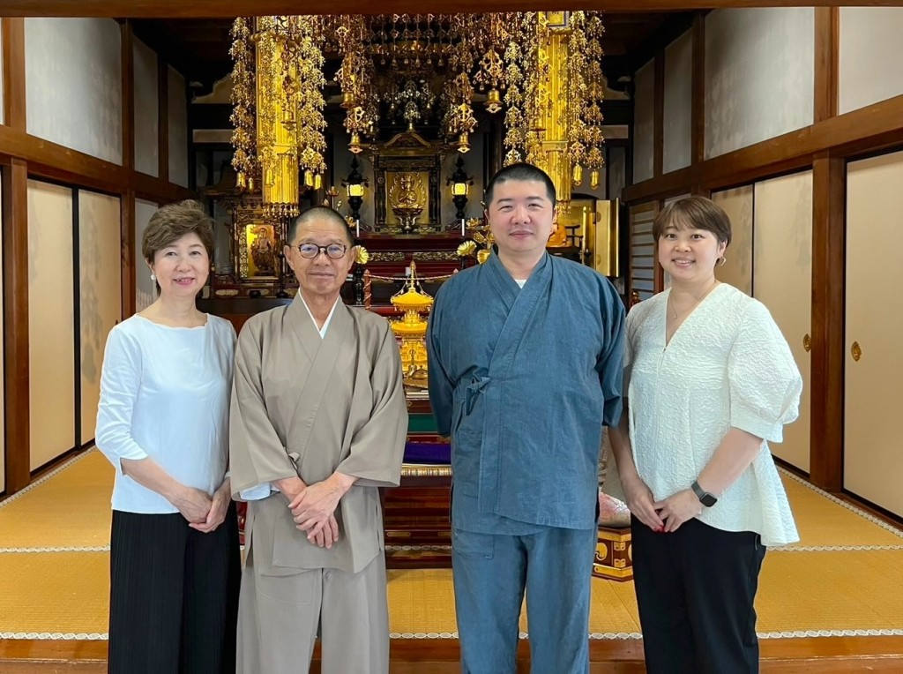

ご法事にあたって必要なことを
こちらからお手続きいただけます

ご法事をより安心してお迎えいただけるよう、
お手続き・ご確認いただきたいことをまとめました。
下記よりお進みください。
ご来山から解散までの目安です
15分前までにお越しください。お持ち物(お位牌・ご遺骨等)を本堂までお運びください。
本堂にご案内いたします。お荷物のお預け・お手洗い等はこのお時間にお済ませください。
読経・焼香をお勤めいたします。小さなお子様もご一緒にどうぞ。
故人を偲びながら、仏さまのお教えをお伝えいたします。
お墓の前にてご納骨のお勤めをいたします。
お食事ご希望の方は客殿へご案内いたします。お食事のない方はそのままご解散となります。
お越しの際のご案内
ご法要開始の15分前までにご到着ください。 お持ち物のご準備・ご参列の方のお迎えがございます。
境内にお停めいただけます。 大型車でお越しの場合は事前にご相談ください。
真言宗豊山派 照臨山 多聞院
〒162-0851
東京都新宿区弁天町100
お車でお越しの際は、カーナビに「多聞院」または上記住所をご入力ください。
ご不明な点がございましたら
お気軽にご連絡ください